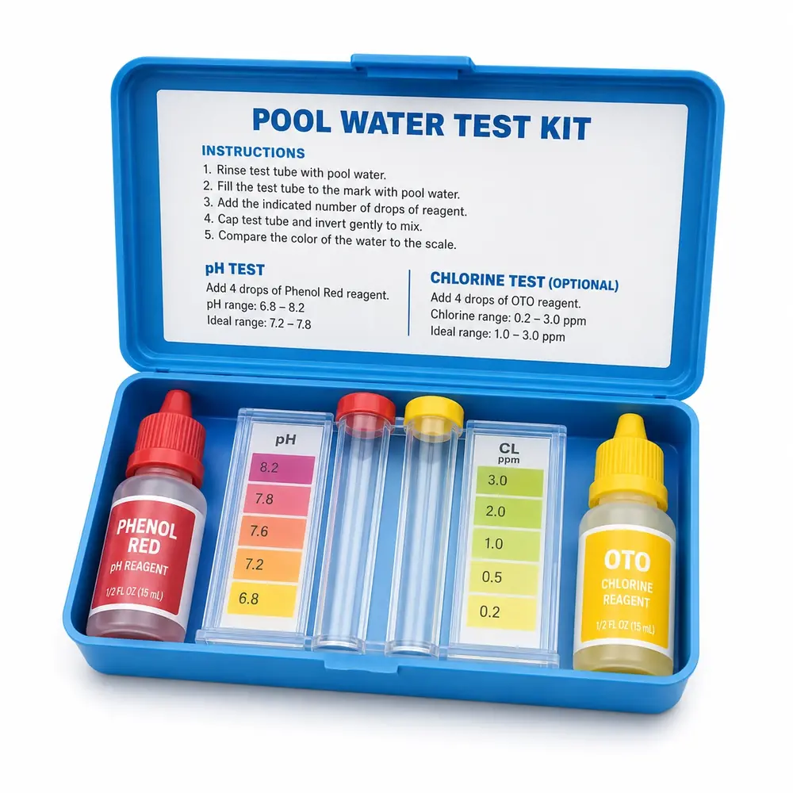

Elección de producto
¿Qué cloro necesita tu pileta?
Dicloro, tricloro, pastillas y multiacción según el tipo de superficie.
Ver productosGuías claras para elegir productos y resolver problemas.
Información rápida, visual y práctica para elegir productos y resolver problemas frecuentes.
Dicloro, tricloro, pastillas y multiacción según el tipo de superficie.
Ver productos
Qué revisar y qué productos pueden formar parte de la recuperación.
Ver guía paso a paso
Frecuencia, tamaños de 50 g y 200 g, boya dosificadora y litros.
Ver ficha
Cuándo usar cada uno según el revestimiento y el objetivo del tratamiento.
Comparar opciones
Una rutina ordenada de pH, cloro, filtrado, cepillado y limpieza para evitar problemas.
Ver guía de mantenimientoControlá el pH, cepillá, elegí el cloro según la superficie, filtrá y usá alguicida o clarificador cuando corresponda. Consultá la guía completa para seguir el orden correcto.
La dosis depende del tamaño. Como orientación: 50 g cada 5.000 litros o 200 g cada 20.000 litros.
Dicloro granulado rápido para recuperación, choque y mantenimiento.
Tricloro granulado lento cuando se utiliza granulado.
Mantené una rutina de medición de pH, desinfección, filtrado, cepillado y limpieza. Después de lluvia o uso intenso, volvé a controlar el agua antes de agregar productos.
Ingresá las medidas y recibí las cantidades sugeridas.